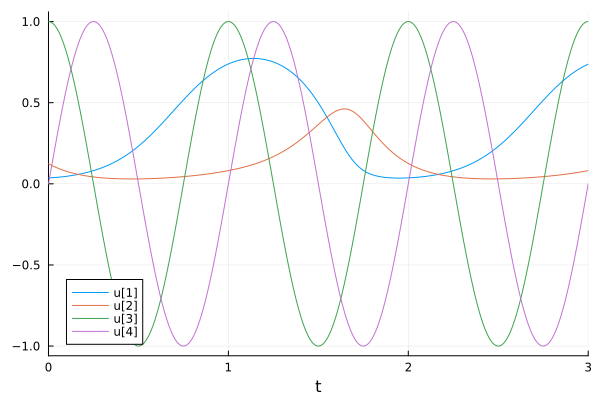
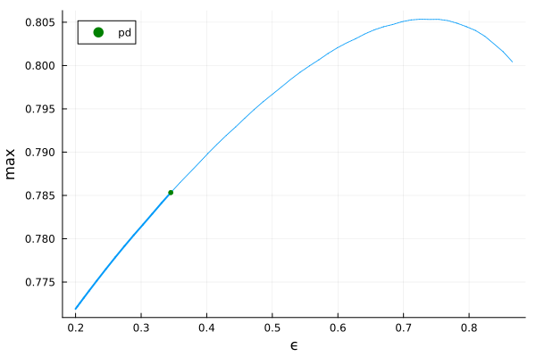
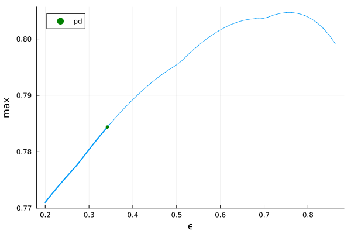
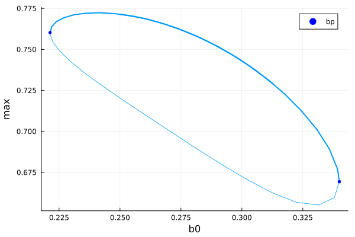
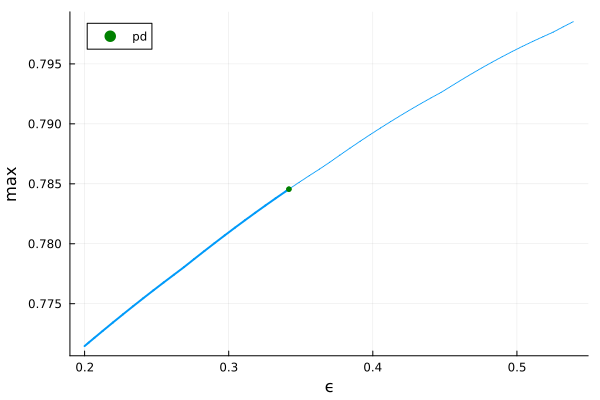
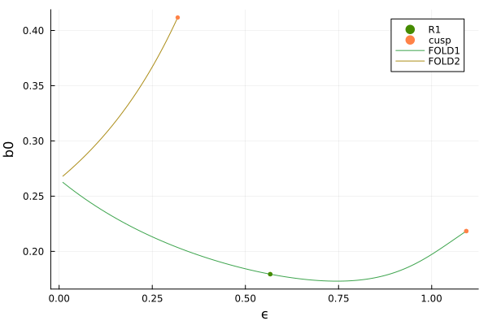
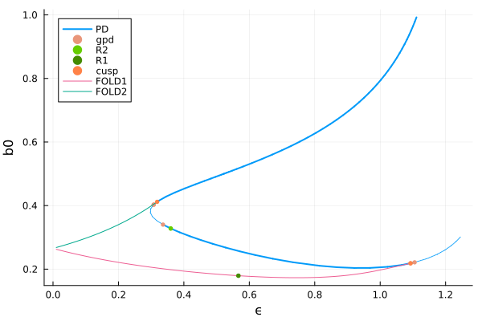

🟠 Periodic predator-prey model
This example is found in the MatCont ecosystem.
The following is a periodically forced predator-prey model studied in [Kuznetsov] using shooting techniques.
\[\tag{E}\left\{\begin{aligned} \dot{x} & =r\left(1-\frac{x}{K}\right) x-\frac{a x y}{b_0(1+\varepsilon u)+x} \\ \dot{y} & =e \frac{a x y}{b_0(1+\varepsilon u)+x}-d y \\ \dot{u} & =u-2 \pi v-\left(u^2+v^2\right) u \\ \dot{v} & =2 \pi u+v-\left(u^2+v^2\right) v \end{aligned}\right.\]
This tutorial is useful in that we show how to start periodic orbits continuation from solutions obtained from solving ODEs. We are interested in cases where $(u,v)\neq (0,0)$ for which we have only periodic solutions. Thus, we cannot rely on branching from equilibria to find these periodic orbits.
using Revise, Plotsimport BifurcationKit as BKimport BifurcationKit: @optic, @set, @resetfunction Pop!(du, X, p, t = 0) (;r,K,a,ϵ,b0,e,d) = p x, y, u, v = X p = a * x / (b0 * (1 + ϵ * u) + x) du[1] = r * (1 - x/K) * x - p * y du[2] = e * p * y - d * y s = u^2 + v^2 du[3] = u-2pi * v - s * u du[4] = 2pi * u + v - s * v duendpar_pop = ( K = 1., r = 6.28, a = 12.56, b0 = 0.25, e = 1., d = 6.28, ϵ = 0.2, )z0 = [0.1,0.1,1,0]prob_bif = BK.ODEBifProblem(Pop!, z0, par_pop, (@optic _.b0); R01 = BK.FiniteDifferences(), record_from_solution = (x, p; k...) -> (x = x[1], y = x[2], u = x[3]))opts_br = BK.ContinuationPar(p_min = 0., p_max = 20.0, ds = 0.002, dsmax = 0.01, n_inversion = 6, nev = 4)Simulation of the model
This is very straightforward thanks to SciML.
import OrdinaryDiffEq as DEprob_de = DE.ODEProblem(Pop!, z0, (0,200.), par_pop)sol = DE.solve(prob_de, DE.Vern9())prob_de = DE.ODEProblem(Pop!, sol.u[end], (0,3.), par_pop, reltol = 1e-8, abstol = 1e-10)sol = DE.solve(prob_de, DE.Vern9())plot(sol)
Utility functions
We start with two helper functions that record and plot the periodic orbits. The following works for shooting, collocation and trapezoid methods for computing periodic orbits.
function record_from_solution(x, p; iter, state, k...) xtt = BK.get_periodic_orbit(p.prob, x, BK.getparams(iter, state)) return (max = maximum(xtt[1,:]), min = minimum(xtt[1,:]), period = BK.getperiod(p.prob, x, BK.getparams(iter, state)))endfunction plot_solution(x, p; iter, state, k...) # PB avec Fold!!!! ARgs xtt = BK.get_periodic_orbit(p.prob, x, BK.getparams(iter, state)) plot!(xtt.t, xtt[1,:]; label = "x", k...) plot!(xtt.t, xtt[2,:]; label = "y", k...) # plot!(br; subplot = 1, putspecialptlegend = false)endargspo = (;record_from_solution, plot_solution)(record_from_solution = Main.record_from_solution, plot_solution = Main.plot_solution)Periodic orbits with trapezoid method
We compute periodic orbits of (E) using the Trapezoid method. We are now equipped to build a periodic orbit problem from a solution sol::ODEProblem.
# function to build probtrap from solprobtrap, ci = BK.generate_ci_problem(BK.Trapeze(M = 150), prob_bif, sol, 2.)opts_po_cont = BK.ContinuationPar(opts_br, max_steps = 50, tol_stability = 1e-8)brpo_fold = BK.continuation(probtrap, ci, BK.PALC(), opts_po_cont; # verbosity = 3, plot = true, argspo... )scene = plot(brpo_fold)We continue w.r.t. to $\epsilon$ and find a period-doubling bifurcation.
prob2 = (@set probtrap.prob_vf.lens = (@optic _.ϵ))brpo_pd = BK.continuation(prob2, ci, BK.PALC(), opts_po_cont; argspo... )scene = plot(brpo_pd)
Periodic orbits with parallel standard shooting
We are now ready to build a periodic orbit problem from a solution sol::ODEProblem.
probsh, cish = BK.generate_ci_problem( BK.Shooting(M = 3), prob_bif, prob_de, sol, 2.; alg = DE.Vern9(), abstol = 1e-12, reltol = 1e-10)opts_po_cont = BK.ContinuationPar(opts_br, max_steps = 50, tol_stability = 1e-3)br_fold_sh = BK.continuation(probsh, cish, BK.PALC(tangent = BK.Bordered()), opts_po_cont; argspo...)scene = plot(br_fold_sh)We continue w.r.t. to $\epsilon$ and find a period-doubling bifurcation.
probsh2 = (@set probsh.lens = (@optic _.ϵ))brpo_pd_sh = BK.continuation(probsh2, cish, BK.PALC(), opts_po_cont; argspo... )scene = plot(brpo_pd_sh)
Periodic orbits with orthogonal collocation
We do the same as in the previous section but using orthogonal collocation. This is the most reliable and precise method for ODE. When the dimension of the ODE is large, it becomes prohibitive.
# this is the function which builds probcoll from solprobcoll, ci = BK.generate_ci_problem(BK.Collocation(30, 4), prob_bif, sol, 2)opts_po_cont = BK.ContinuationPar(opts_br, max_steps = 50, tol_stability = 1e-8)brpo_fold = BK.continuation(probcoll, ci, BK.PALC(), opts_po_cont; argspo... )scene = plot(brpo_fold)
We continue w.r.t. to $\epsilon$ and find a period-doubling bifurcation.
prob2 = (@set probcoll.prob_vf.lens = (@optic _.ϵ))brpo_pd = BK.continuation(prob2, ci, BK.PALC(), BK.ContinuationPar(opts_po_cont, dsmax = 5e-3); argspo... )scene = plot(brpo_pd)
Continuation of Fold / PD of periodic orbits with Collocation
We continue the previously detected fold / period-doubling bifurcations as function of two parameters and detect codim 2 bifurcations. We first start with the computation of the curve of Folds.
opts_pocoll_fold = BK.ContinuationPar(brpo_fold.contparams, max_steps = 100, p_min = 0.01, p_max = 1.2)# we can increase the precision for collocation@reset opts_pocoll_fold.newton_options.tol = 1e-12fold_po_coll2 = BK.continuation(brpo_fold, 1, (@optic _.ϵ), opts_pocoll_fold; # verbosity = 2, plot = true, detect_codim2_bifurcation = 2, jacobian_ma = BK.MinAug(), start_with_eigen = false, bothside = true, usehessian = true, )fold_po_coll1 = BK.continuation(brpo_fold, 2, (@optic _.ϵ), opts_pocoll_fold; # verbosity = 2, plot = true, detect_codim2_bifurcation = 2, jacobian_ma = BK.MinAug(), start_with_eigen = false, bothside = true, usehessian = true, )plot(fold_po_coll1, fold_po_coll2, branchlabel = ["FOLD1", "FOLD2"])
We turn to the computation of the curve of PD points.
par_pop2 = @set par_pop.b0 = 0.5sol2 = DE.solve(DE.remake(prob_de, p = par_pop2, u0 = [0.1, 0.1, 1, 0], tspan=(0, 1000)), DE.Vern9())sol2 = DE.solve(DE.remake(sol2.prob, tspan = (0, 10), u0 = sol2.u[end]), DE.Vern9())plot(sol2, xlims = (8, 10))probcoll, ci = BK.generate_ci_problem(BK.Collocation(30, 4; meshadapt=false), BK.re_make(prob_bif, params = sol2.prob.p), sol2, 1.)prob2 = @set probcoll.prob_vf.lens = @optic _.ϵbrpo_pd = BK.continuation(prob2, ci, BK.PALC(tangent = BK.Bordered()), BK.ContinuationPar(opts_po_cont, dsmax = 5e-3); argspo..., bothside = true, )opts_pocoll_pd = BK.ContinuationPar(brpo_pd.contparams, max_steps = 40, p_min = 1.e-2, dsmax = 1e-2, ds = -1e-3)pd_po_coll2 = BK.continuation(deepcopy(brpo_pd), 2, (@optic _.b0), opts_pocoll_pd; verbosity = 3, plot = true, detect_codim2_bifurcation = 1, start_with_eigen = false, jacobian_ma = BK.MinAug(), normC = BK.norminf, bothside = true, )plot(pd_po_coll2, vars = (:ϵ, :b0), branchlabel = "PD")plot!(fold_po_coll1, fold_po_coll2, branchlabel = ["FOLD1", "FOLD2"])
References
- Kuznetsov
Yu.A. Kuznetsov, S. Muratori, and S. Rinaldi. Bifurcations and chaos in a periodic predator-prey model, Internat. J. Bifur. Chaos Appl. Sci. Engr., 2 (1992), 117-128.